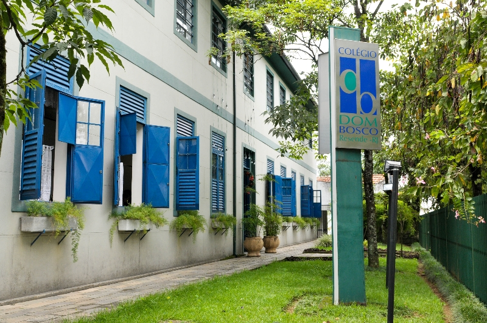
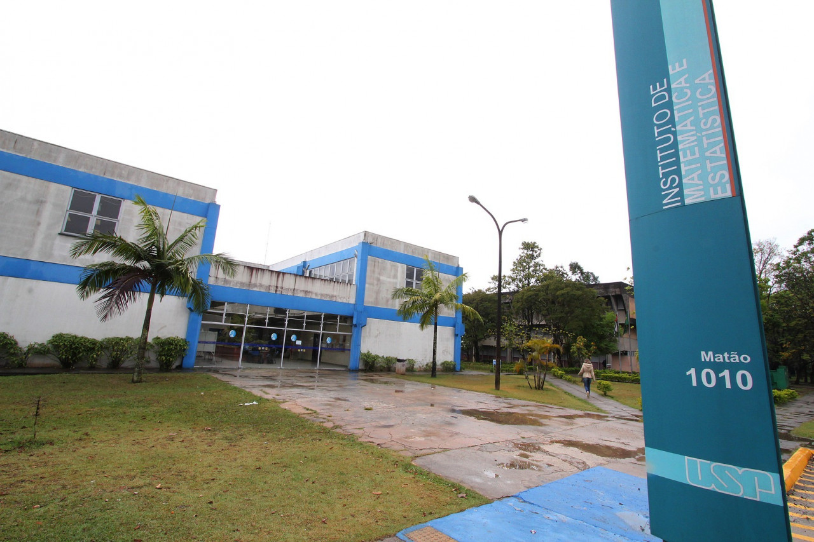
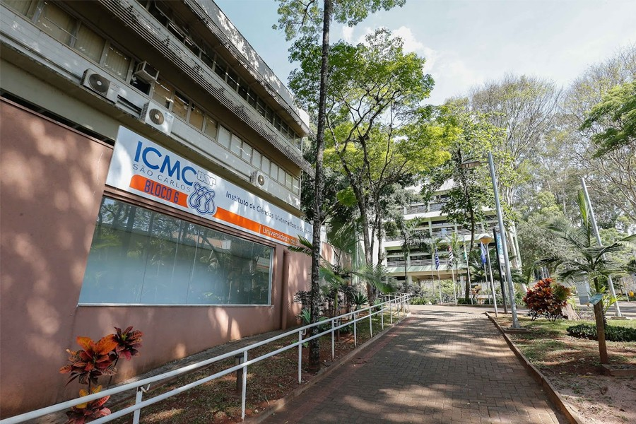

Minha Trajetória
Uma jornada de aprendizado constante, do ensino fundamental à USP.

2016 - 2019
Ensino Fundamental
Ensino Fundamental - Resende/RJ
O que aprendi:
- Conhecimentos básicos de computação focado em lógica.
- Inglês intermediário por meio de estudos focados em conversação.
Extracurricular:
- Participação em olimpíadas de conhecimento nas áreas:
- Informática (OBI)
- Matemática (OMP, OBMEP)
- Robótica (OBR)
- Astronomia (OBA)
2020 - 2022
Ensino Médio Técnico
Curso de Informática no COTUCA - Campinas/SP
O que aprendi:
- Lógica de programação
- Diversas tecnologias usadas durante disciplinas técnicas, como:
- Java
- Python
- JavaScript
- C
- C#
- HTML
- CSS
- SQL
- R
- GitHub
- Programação de jogos, websites, aplicativos android.
- Estruturas de dados
- Metodologias de desenvolvimento
Extracurricular:
- Participação em olimpíadas de conhecimento nas áreas:
- Matemática (OBMEP)
- Astronomia (OBA)
- Informática (OBI)
- Participação em atividades como Mentoria e Congregação
- Participação no PIC (Programa de Iniciação Científica Jr.)
- Participação em feiras de ciências e pesquisas com o projeto de TCC
- Curso de mandarim básico - Instituto Confúcio
- Prêmio de Reconhecimento Discente
- Projeto para NASA Space Apps Challenge

2023
Curso Ciência da Computação
BCC no IME - São Paulo/SP
O que aprendi:
- Aprofundei meus conhecimentos na área da computação
Extracurricular:
- Iniciação Científica no subprojeto Bike SP do INCT da Internet do Futuro para Cidades Inteligentes
- Gerente negócios e líder de computação no IMEJr

2024 - Atual
Curso Sistemas de Informação
BSI no ICMC- São Carlos/SP
O que aprendi:
- Aprofundei meus conhecimentos de programação, estudando sobre:
- Sistemas operacionais
- Redes de computadores
- Banco de dados
- Criação de jogos seguindo POO
- Comércio Eletrônico
- Engenharia de Software
Extracurricular:
- Monitora no Observatório Dietrich Schiel (onde aprendi muito sobre como expor conhecimentos para diferentes públicos e melhorei minhas softskills)
- Participação na organização do Pint of Science São Carlos